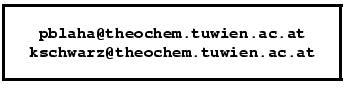

Next: 1 Introduction to the
Up: List of Figures
Previous: List of Figures
Contents
1 Introduction
The Linearized Augmented Plane Wave (LAPW) method has proven to be one
of the most accurate methods for the computation of the electronic
structure of solids within density functional theory. A full-potential
LAPW-code for crystalline solids has been developed over a period of
more than twenty years. A first copyrighted version was called
WIEN and it was published by
P. Blaha, K. Schwarz, P. Sorantin, and S. B. Trickey, in
Comput.
Phys. Commun. 59, 399 (1990).
In the following years significantly improved and updated UNIX versions of
the original WIEN-code were developed, which were called WIEN93,
WIEN95 and WIEN97.
Now a new version, WIEN2k, is available, which is based on an alternative
basis set. This allows a significant improvement, especially in terms of
speed, universality, user-friendliness and new features.
WIEN2k is written in FORTRAN 90 and
requires a UNIX operating system since the programs are linked
together via C-shell scripts. It has been implemented successfully on
the following computer systems: Pentium systems running under
Linux, IBM RS6000, HP , SGI , Compac DEC Alpha, and SUN. It is expected
to run on any modern UNIX (LINUX) system.
Hardware requirements will change from case to case (small cases with
10 atoms per unit cell can be run on any Pentium PC with 128 Mb under
Linux), but generally we recommend a powerful PC or workstation with at
least 256 Mb (better 512 Mb or more) memory and 1 Gb (better a few Gb)
of disk space. For coarse grain parallization on the k-point level, a
cluster of PCs with a 100 Mb/s network is sufficient. Faster communication
is recommended for the fine grain (single k-point) parallel version.
In order to use all options and features (such as the new graphical
user interface w2web or some of its plotting tools) the following public
domain program packages in addition to a F90 compiler
must be installed:
- perl 5 or higher (for w2web only)
- emacs or another editor of your choice
- ghostscript (with jpg support)
- gnuplot (with png support)
- www-browser
- pdf-reader (acroread,...)
- MPI+SCALAPACK (on parallel computers only)
Usually these packages should be available on modern systems.
If one of these packages is not available, it can either be installed
from public domain sources (see Chapt. 11) or the
corresponding configuration may be changed (e.g. using vi instead of
emacs). None of the principal components of WIEN2k requires these
packages, only for advanced features or w2web they are needed.
WIEN2k has the following features that are new with respect to WIEN97:
- due to the new APW+lo basis set it is significantly faster
(up to an order of magnitude). Optimizations in the most time consuming parts
of LAPW1 and LAPW2 have been made.
- iterative diagonalization (for cases with large matrices and few eigenvalues)
- beside the k-point parallelization (including heterogeneous workstation
clusters) a fine grain parallelization based on MPI is also available.
- A new web-based graphical user interface w2web has been developed.
It does NOT require an X-environment and thus WIEN2k can be controlled from
(but not run on !) any Windows-PC. This
should particularly help the novice to get acquainted with WIEN2k
but it should be useful for the regular user as well.
- support for AFM and FSM calculations
- spin-orbit coupling, including a new
 -LO for higher accuracy
-LO for higher accuracy
- wavefunction plotting
- determination of irreducible representations
- elastic constants (cubic cases only)
- Topological analysis based on Bader's ``atoms in molecules'' concept
- LDA+U, orbital polarization (OP), magnetic and electric fields
- Exact-exchange and Hybrid functionals inside spheres
- new PKZB and TPSS meta-GGA functionals
The development of WIEN2k was made possible by support from many
sources. We try to give credit to all who have contributed. We
hope not to have forgotten anyone who made an important
contribution for the development or the improvement of the WIEN2k
code. If we did, please let us know (we apologize and will
correct it). The main developers in addition to the authors
are the following groups:
- C. Ambrosch-Draxl (Univ. Graz, Austria) and her group
- U. Birkenheuer (Dresden), wave function plotting
- T. Charpin (Paris), elastic constants
- R. Dohmen und J. Pichlmeier (RZG, Garching), parallelization
- P. Novák and J. Kuneš (Prague), LDA+U, SO
- C. Persson (Uppsala), irreducible representations
- M. Scheffler (Fritz Haber Inst., Berlin) and his group
- E. Sjöstedt and L Nordström (Uppsala, Sweden), APW+lo
- J. Sofo and J. Fuhr (Barriloche), Bader analysis
- B. Yanchitsky and A. Timoshevskii (Kiev), sgroup
We want to thank those WIEN97 users, who reported bugs or
made suggestions and thus contributed to the new version as well as
persons who have made major
contributions in the development of previous versions of the code:
- R. Augustyn (Vienna), U. Birkenheuer (Munich), P. Blöchl (IBM Zürich), F. Boucher (Nantes), A. Chizmeshsya (Arizona), P. Dufek (Vienna), H. Ebert
(Munich), E. Engel (Frankfurt), H. Enkisch (Dortmund), M. Fähnle (MPI Stuttgart), S. Kohlhammer (Stuttgart), T. Kokalj (Ljubljana), H. Krimmel (Stuttgart), P. Louf (Vienna), I. Mazin (Washington), M. Nelhiebel (Vienna), V. Petricek (Prague), C.
Rodrigues (La Plata, Argentina), P. Schattschneider (Vienna), R. Schmid (Frankfurt), D. Singh (Washington), H. Smolinski (Dortmund), T. Soldner
(Leipzig), P. Sorantin (Vienna), S. Trickey (Gainesville), S. Wilke (Exxon, USA), B. Winkler (Kiel)
This work was supported by the following institutions:
- Austrian Science Foundation (FWF-Projects P5939, P7063,
P8176, SFB08-11)
- Siemens Nixdorf (WIEN93)
- IBM (WIEN)
We take this opportunity to thank for all
contributions.
For suggestions or bug reports please contact the authors by
email:

Next: 1 Introduction to the
Up: List of Figures
Previous: List of Figures
Contents
pblaha
2007-01-25